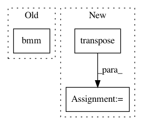

de0d3f7329c9c4f0204d87e76b6a956b0930ef3e,allennlp/modules/matrix_attention/bilinear_matrix_attention.py,BilinearMatrixAttention,forward,#BilinearMatrixAttention#Any#Any#,45
Before Change
@overrides
def forward(self, matrix_1: torch.Tensor, matrix_2: torch.Tensor) -> torch.Tensor:
intermediate = matrix_1.bmm(self._weight_matrix.unsqueeze(0))
return self._activation(intermediate.bmm(matrix_2.transpose(1, 2)) + self._bias)
After Change
matrix_1 = torch.cat([matrix_1, bias1], -1)
matrix_2 = torch.cat([matrix_2, bias2], -1)
intermediate = torch.matmul(matrix_1.unsqueeze(1), self._weight_matrix.unsqueeze(0))
final = torch.matmul(intermediate, matrix_2.unsqueeze(1).transpose(2, 3))
return self._activation(final.squeeze(1) + self._bias)
In pattern: SUPERPATTERN
Frequency: 3
Non-data size: 3
Instances
Project Name: allenai/allennlp
Commit Name: de0d3f7329c9c4f0204d87e76b6a956b0930ef3e
Time: 2018-07-20
Author: markn@allenai.org
File Name: allennlp/modules/matrix_attention/bilinear_matrix_attention.py
Class Name: BilinearMatrixAttention
Method Name: forward
Project Name: cornellius-gp/gpytorch
Commit Name: 60a342edc8b501802135df44869353cc8604d838
Time: 2018-01-11
Author: gpleiss@gmail.com
File Name: gpytorch/kernels/rbf_kernel.py
Class Name: RBFKernel
Method Name: forward
Project Name: OpenNMT/OpenNMT-py
Commit Name: b5486aaea994960688152e91fbab7699dc04e8c1
Time: 2017-08-14
Author: taolei@csail.mit.edu
File Name: onmt/modules/GlobalAttention.py
Class Name: GlobalAttention
Method Name: score